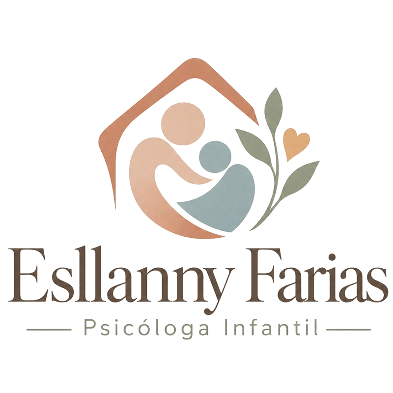

Ética, Amor e Ciência no Desenvolvimento.
Promovendo o desenvolvimento, a autonomia e a qualidade de vida de crianças e adolescentes por meio de intervenções baseadas em evidências e de um olhar profundamente humanizado.

Um espaço seguro para crescer, sentir e florescer.
Cada atendimento é pensado para oferecer acolhimento emocional, construir vínculos de confiança e promover o desenvolvimento saudável das crianças, com cuidado, segurança e profissionalismo para elas e para suas famílias.
Segurança e acolhimento
Um ambiente protegido para expressar sentimentos e enfrentar desafios sem medo de julgamentos.
Vínculo e confiança
O encontro entre cuidado e desenvolvimento: apoio e orientação para cada descoberta da criança.
Crescimento e evolução
Como uma planta, cada criança tem seu próprio ritmo e precisa de estímulos, compreensão e cuidado.
Afeto e sensibilidade
Empatia, escuta e respeito às emoções, com ética e atenção à individualidade.
Acolher cada criança em sua individualidade e respeitar seu tempo de desenvolvimento.
Especialidades Clínicas
Intervenções terapêuticas comprovadas e focadas no desenvolvimento integral do paciente.
Ciência ABA
Análise do Comportamento Aplicada voltada para o Transtorno do Espectro Autista (TEA), com metodologias atestadas.
Neuropsicologia
Avaliação detalhada e intervenção estratégica das funções cognitivas, emocionais e comportamentais.
Orientação Parental
Treinamento e suporte estruturado para as famílias, focando no manejo comportamental no ambiente diário.
Sobre a Profissional
Sou psicóloga com atuação em neurodesenvolvimento infantil desde 2022. Meu trabalho é guiado pela integração entre ciência, sensibilidade clínica e afeto.
Compreendo que, quando o conhecimento científico é aliado a uma prática humanizada, é possível potencializar habilidades, promover autonomia e transformar trajetórias de vida, respeitando a singularidade de cada criança e adolescente e de suas famílias.
Formação Escolar
Psicóloga Formada
Universidade Paulista (UNIP)
Pós-Graduada
Análise do Comportamento Aplicada
Pós-Graduanda
Neuropsicologia - Universidade Federal de São Paulo (UNIFESP)
Cursos de Aperfeiçoamento
Transtorno do Espectro Autista, Transtorno Opositor Desafiador, Gestão de Comportamentos Agressivos e Inapropriados, Intervenção Precoce, Habilidades Sociais na Infância, Orientação Parental e Protocolos Avaliativos.
Atuação Profissional
Um trabalho focado no desenvolvimento integral e na transformação do dia a dia familiar, respeitando a neurodiversidade.
Avaliações do Desenvolvimento
Realizadas por meio de protocolos padronizados, observações clínicas criteriosas e entrevistas com os pais.
Planos Terapêuticos
Programas altamente individualizados, baseados nas necessidades únicas de cada criança e adolescente.
Estimulação de Habilidades
Desenvolvimento ativo de habilidades emocionais, cognitivas, sociais, comunicativas e adaptativas.
Autorregulação
Desenvolvimento de estratégias viáveis de autorregulação emocional para auxiliar comportamentos desafiadores.
Orientações Sistêmicas
Fornecimento de orientações sistêmicas ativas com atuações parentais e escolares.
Equipe Multidisciplinar
Trabalho colaborativo e comunicação constante com todos os outros profissionais envoltos na vida da criança.
Formas de Atendimento
Nem sempre é fácil perceber quando uma dificuldade faz parte do desenvolvimento esperado e quando ela merece uma atenção especializada. Estou aqui para caminhar ao lado da sua família nessa jornada.
Atendimento Psicológico Infantil
Para quem busca um acompanhamento especializado para o filho, com intervenções individualizadas e orientação para toda a família.
- Análise do Comportamento Aplicada (ABA)
- Desenvolvimento cognitivo, emocional e comportamental
- Orientação para toda a família
Orientação Parental
Se você deseja entender como estimular seu filho em casa de forma individualizada, mas não mora em Praia Grande/SP, também posso te ajudar!
- Estratégias personalizadas para a rotina da sua casa
- Manejo de comportamentos desafiadores
- Atendimento de onde você estiver
Como Chegar
Consultório localizado no bairro Boqueirão, em Praia Grande/SP.
Endereço
Av. Pres. Costa e Silva, 609 – Sala 503Boqueirão, Praia Grande – SP
Atendimento com horário agendado. Entre em contato antes da sua visita.
Perguntas Frequentes
Esclarecimentos rápidos sobre o formato de atendimento e atuações clínicas.